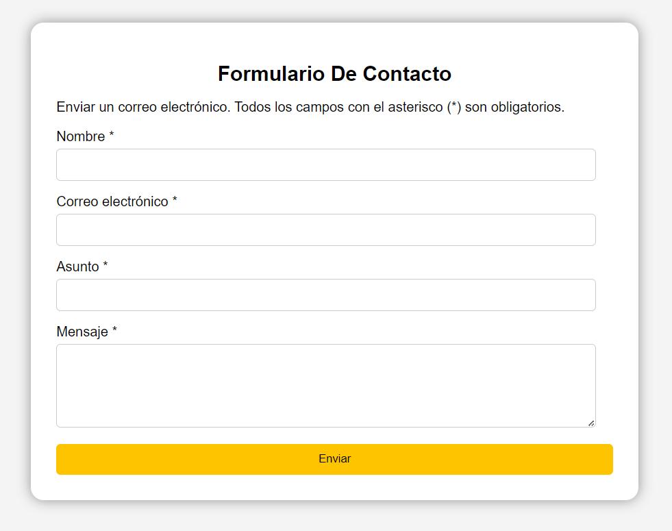

Proyectos Universitarios

Formulario

Soy un desarrollador apasionado por la tecnología y la programación, con experiencia en una amplia gama de proyectos que abarcan desde el desarrollo de aplicaciones de escritorio en C# utilizando Windows Forms y patrones de diseño como Singleton y Factory, hasta la creación de sistemas completos en Java y bases de datos en SQL Server y Oracle SQL. Mis habilidades abarcan lenguajes de programación como C#, Java, HTML y CSS, y he trabajado en proyectos que incluyen la gestión de empleados, sistemas de ventas, y prototipos de seguimiento médico. Me esfuerzo constantemente por aprender nuevas herramientas y mejorar mis conocimientos, lo que me ha permitido desarrollar soluciones escalables, eficientes y orientadas a mejorar la experiencia del usuario final. Además, estoy enfocado en la creación de páginas web que no solo muestren mis habilidades actuales, sino que sirvan como plataforma para futuros proyectos innovadores. Mi objetivo siempre ha sido salir de mi zona de confort y enfrentar desafíos que me impulsen a crecer como desarrollador, combinando creatividad con una sólida base técnica para crear aplicaciones y sistemas de calidad.